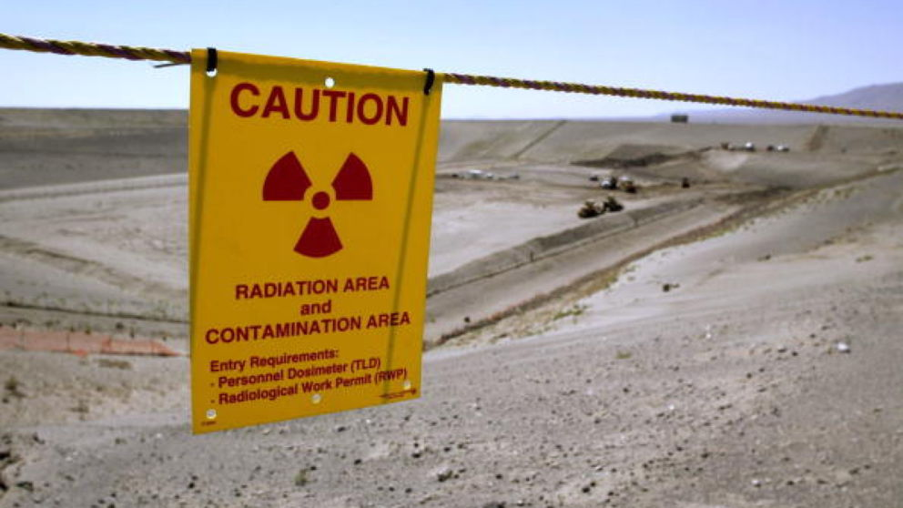
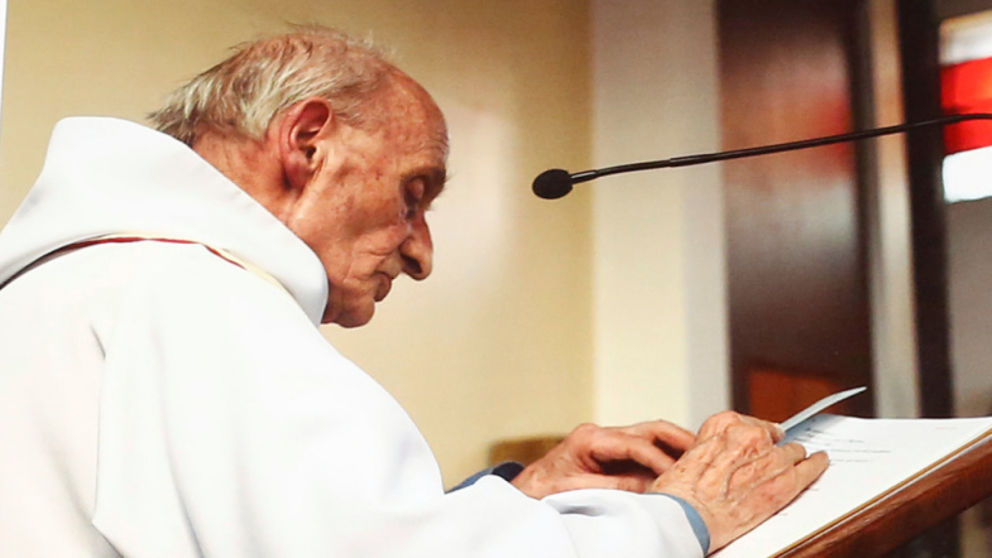
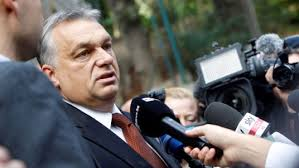
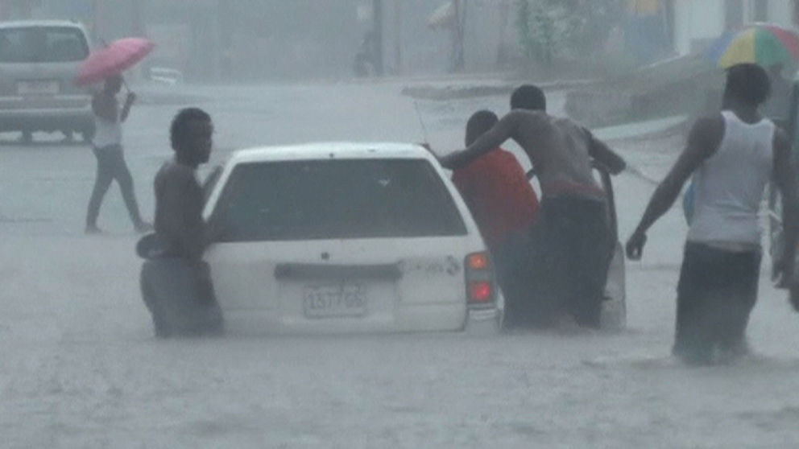

Russia suspends plutonium disposal deal with US over sanctions
President Vladimir Putin signs a decree saying Moscow "must take urgent measures to defend Russian security".
Russia has demanded the US lifts all sanctions against Moscow before it will resume an agreement on the disposal of weapons-grade plutonium.
Vladimir Putin has ordered a halt to a deal with America, citing Washington's "unfriendly actions".
An accord was signed in 2000 requiring each country to dispose of at least 34 tonnes of plutonium by burning it in nuclear reactors.
The two countries recommitted to the deal six years ago.
However, following the Fukushima nuclear disaster in Japan in 2011, the US opposed the building of a fuel reprocessing plant.
Instead, US energy officials pushed for another method of disposal, calling for plutonium to be mixed with other substances and stored underground.
Moscow argued any method to dilute plutonium is reversable and earlier this year Mr Putin accused the US of destroying it in a way that allowed it to be used again.
A decree published on Monday states Russia is pulling out of the agreement "due to a drastic change in circumstances, the appearance of a threat to strategic stability due to unfriendly actions of the United States toward Russia".
It also claimed Moscow "must take urgent measures to defend Russian security".
Mr Putin's spokesman, Dmitry Peskov, said Washington has not honoured the agreement.
However, a bill submitted by Mr Putin to parliament, which asked lawmakers to support the agreement's suspension, indicated there may be a way to keep the deal alive.
It said it may be reinstated if Washington moves US forces out of countries that became NATO members after 2000, ends "all sanctions" and compensates Moscow for the financial losses resulting from them.
Russia is at loggerheads with the West over its 2014 annexation of Crimea and the conflict in Ukraine.

Priest murdered by Islamist extremists to become a saint
A procession took place through the town of Saint-Etienne-du-Rouvray before a mass was held in memory of Father Jacques Hamel.
A French priest murdered by Islamic extremists in his Normandy church is to become a saint.
Father Jacques Hamel, who was in his 80s, was killed during a morning mass at the Catholic church in Saint-Etienne-du-Rouvray in July.
At a service to reopen the church to parishioners for the time since the attack, it was announced Pope Francis had put Father Hamel on a fast track to possible sainthood.
Archbishop of Rouen Dominique Lebrun, who presided over a special ceremony to restore the sacred nature of the church, said: "Pope Francis has waived the five-year delay before a sainthood process can begin."
For someone to become a saint usually a miracle needs to have been declared but that can be waived if there is evidence that the individual is a martyr.
Father Hamel was killed by 19-year-old Adel Kermiche and his accomplice Abdelmalik Petitjean.
They were shot dead by police as they tried to leave using nuns as human shields.
French prosecutors said the pair were guided by Islamic State commanders in Syria.
On Sunday several Muslims joined in a public gathering to mark the re-opening of the church after a local imam called for "a day of brotherhood".
The Saint-Etienne-du-Rouvray attack took place 12 days after the truck attack in Nice in which 84 people were killed by a Tunisian man who pledged allegiance to IS.

Overwhelming anti-migration vote in Hungary declared invalid
Despite low voter turnout, the country's PM hails the result as "outstanding" and says it will still have "legal consequences".
Hungarians have voted overwhelmingly to reject the EU's migrant quota plan but the result has been declared invalid by the country's National Committee.
For it to stand, at least 50% of the country's eight million people were required to vote.
But the turnout was only around 44%, seemingly a setback for Hungary's right-wing prime minister who is strongly against the EU proposal.
However, the vast majority of those who voted - about 98% - supported PM Viktor Orban in rejecting the bloc's plan to share out migrants who have been granted asylum.
He called the result "outstanding" and said the EU "cannot force" his country to accept refugees and migrants.
The National Committee earlier declared the referendum invalid, meaning its parliament is not compelled to vote on the outcome.
The government, though, says it will be put it to parliament regardless and therefore the vote could still have an important impact.
The question on the ballot was: "Do you want the European Union to be entitled to proscribe the mandatory settlement of non-Hungarian citizens in Hungary without the consent of the National Assembly (Parliament)?"
Mr Orban, who is regarded as a renegade by some fellow EU leaders, had called on his citizens to vote "no" in the ballot.
He wanted them to reject the system designed to share the burden of the migrant influx by distributing successful asylum seekers evenly among European countries.
Voters were asked whether or not to accept EU quotas for migrants and refugees rather than whether they should continue to be members of the EU itself.
Hungary found itself at the centre of the 2015 migration crisis, with tens of thousands of refugees and migrants trying to pass through the country to reach Northern Europe.
Budapest's Keleti train station was a bottleneck with migrants - most from Syria, Iraq and Afghanistan - trying to board trains bound for Munich in Germany.
Hungarian government policy was first to push them back, then let some through and then to build a fence to stop more from coming.
The government says its migration policy is the only consistent policy in Europe: to secure its borders and to expel illegal immigrants.
"For us migration is not a solution but a problem ... Not a medicine but a poison. We don't need it and we won't swallow it" Mr Orban said earlier this year.
"Every single migrant poses a public security and terror risk," he said.
The government's campaign to ensure a "no" vote cost close to £30m.
Government posters and billboards displayed access the country said: "Don't risk it - vote no".

Looters arrested as Hurricane Matthew skims Jamaica
Residents refuse to leave their homes as the most powerful tropical storm in nearly 10 years heads north.
Suspected looters have been detained as Hurricane Matthew skirts Jamaica, bringing heavy rains and flooding.
The two arrests were made as residents in flood-prone areas near Kingston, the capital, refused to leave in the face of the most powerful cyclone to form over the Atlantic since Hurricane Felix in 2007.
Two buses sent to evacuate people in Port Royal returned with just two adults and two children after residents vowed to stay behind to protect their homes.
Forecasters believe Jamaica will miss the worst of Matthew, but it is expected to churn across southwest Haiti later, bringing winds of up to 150mph as it heads towards Cuba.
After reaching Cuba on Tuesday afternoon it is expected to veer west, heading for the Bahamas and possibly Florida.
The approaching storm left one person dead on Friday after a boat with three fishermen overturned off the coast of southern Haiti.
Another boat was broken up by rough seas off the same coast on Sunday. Three people were rescued but the fourth is still missing.
The US National Hurricane Center has forecast storm surges of up to three metres (around 10ft) off Haiti's southern coast and the country's interior ministry has activated an evacuation plan for residents on small, exposed sandy islands in the south.
Meanwhile, the US is evacuating some 700 family members of soldiers at its base in Guantanamo Bay, Cuba.
A US spokesman said: "The remaining military and civilian personnel will shelter in place and be able to support recovery efforts once safe to do so following the storm's passage."
Meteorologists predict Matthew could pose a threat to the United States by the end of the week.